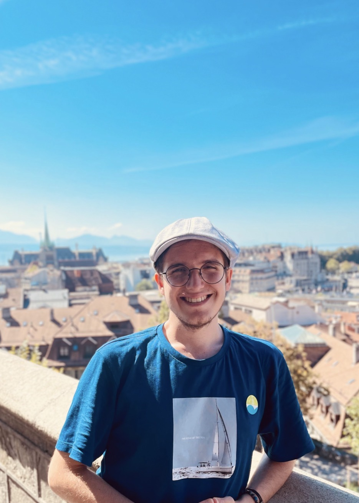

Boğaziçi University
B.S. Electrical and Electronics Engineering
Senior
Academic profile
Senior undergraduate student in Electrical and Electronics Engineering with research interests in graph signal processing, network science, machine learning, and statistics.

01
B.S. Electrical and Electronics Engineering
Senior
Exchange Term: ECE Department
Junior
Double Major: Physics
Achieved the second-highest graduation ranking
02
Temporal networks often evolve through recurring structural patterns whose activations change over time. A key challenge is to recover these connectivity patterns while also explaining how their activations progress across time. In this paper, we propose a dynamics-aware latent network decomposition that represents each graph snapshot as a linear combination of latent network components with time-varying coefficients. Unlike decomposition-only approaches that treat temporal coefficients as free variables or impose only smoothness priors, the proposed formulation jointly learns the latent components, coefficient trajectories, and a low-dimensional progression rule. To capture the deviations not explained by autonomous evolution, we include a learned exogenous forcing term and impose multi-step consistency for stable long-term dynamics. Experiments on synthetic and real temporal network data show that the proposed model recovers interpretable latent network components while capturing temporal evolution.
Read paperMultiview data exhibit relational structure both within and across views. Existing multilayer graph learning methods infer the structure of individual layers but do not model how the layers relate, while product and multiplex graph learning methods capture inter-layer coupling only through a single global factor. We introduce MOSAIC, a framework that learns the full multilayer network, including the inter-layer relationships, from observed data. MOSAIC represents both intra- and inter-layer connectivity as combinations of a small set of shared patterns, or modes, capturing richer interactions compared to single global coupling. Multilayer graph learning is then formulated as a regularized graph total variation minimization that jointly recovers the complete multilayer graph, the view-specific graphs, and a graph over the views. Experiments on synthetic and real multilayer networks show that MOSAIC recovers an interpretable modal organization of intra- and inter-layer structure.
Read paper03
Michigan State University · United States
Boğaziçi University · Türkiye
University of Illinois Urbana-Champaign · United States
Delft University of Technology (TU Delft) · Netherlands
Gebze · Türkiye
04
This project develops an end-to-end method for recovering a clear image when the blur kernel is unknown. It estimates the kernel distribution from paired sharp and blurred images, learns a dictionary from clear-image patches, and combines sparse frequency-domain representations with multi-scale optimization for blind image deblurring.
Read project reportThis project develops the Dirichlet Process from its measure-theoretic foundations through the stick-breaking representation and Chinese Restaurant Process. It connects the Dirichlet Process to mixture models and compares Bayesian nonparametric clustering with finite Gaussian mixture models using synthetic experiments.
Read project report05
06
07
08
Awarded for ranking 10th nationwide in the 2021 Turkish University Entrance Examination (YKS).
Document version
Open the original two-page CV with selectable text and document links.